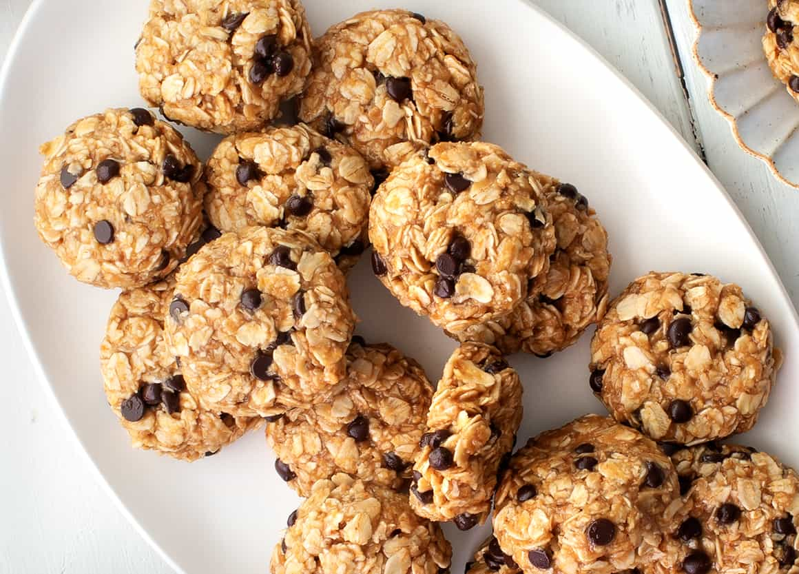

Peanut Butter No-Bake Cookies

These peanut butter no-bake cookies are sweet, nutty, chewy, and delicious.
Made with just 7 ingredients, they're an easy dessert or anytime treat!
Ingredients
- 2/3 cup unsalted natural creamy peanut butter* (or any peat butter of your choice)
- 1/2 cup maple syrup - You can sub in agave honey if you'd like
- 2 tablespoonds melted coconut oil
- 1 teaspoon vanilla extract
- Heaping 1/2 teaspoon of sea salt*
- 2 1/2 cips whole rolled oats
- 1/4 cup mini chocolate chips
- 1 scoop of your preferred protein powder (you may skip this step if you do not want added protein)
Steps
- Line a baking sheet with parchment paper and set aside.
- In a medium bowl, stir together the peanunt butter, maple syrup, coconut oil, vanilla, and salt until smooth. Add the oats and chocolate chips and stir until combined. Use a 2-tablespoon cookie scoop to portion the dough. Use your hands to form into balls and place on the baking sheet, then flatten into disks with your fingers (the disks will become more cohesive as they chill). Chill overnight to allow the cookies to firm up.
Notes
*If your peanut butter is salted, start with half the amount of salt and add more to taste. Be sure to use natural peanut butter that is smooth, not the chunky stuff that you sometimes find at the bottom of the jar.
Return to main page